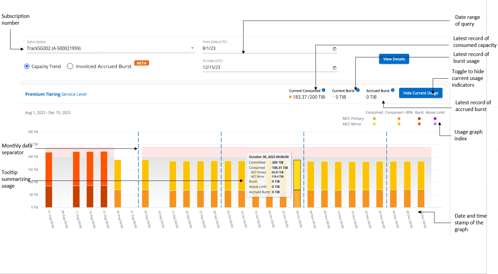
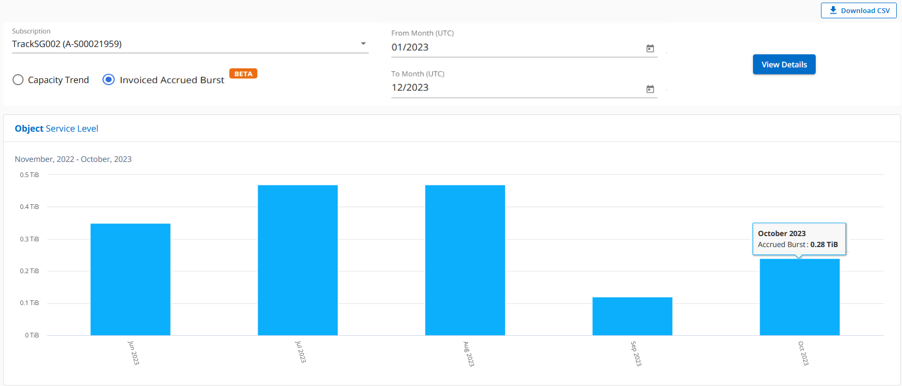
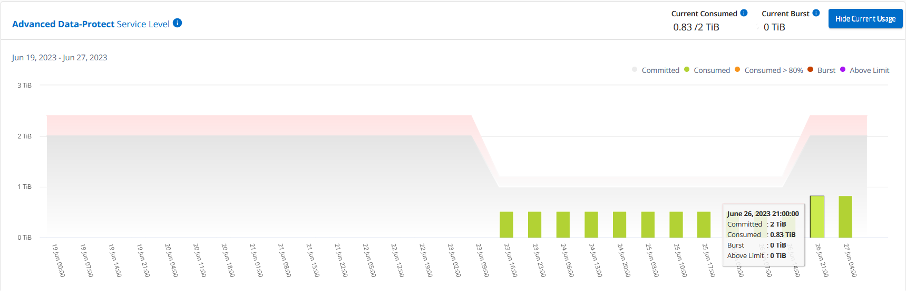
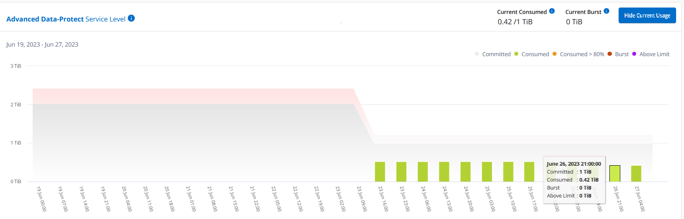

版本資訊
版本資訊
容量趨勢索引標籤
 建議變更
建議變更
「 * 容量趨勢 * 」索引標籤會顯示您在特定期間內 Keystone 訂閱的歷史資料。
垂直圖表會顯示所選時間範圍的使用詳細資料、並提供適當的指標、供您比較和產生報告。
-
按一下 * 一般 > 基礎概念訂閱 > 容量趨勢 * 。
-
選取您要檢視其詳細資料的必要訂閱。您帳戶名稱中的第一個訂閱依預設為選取狀態。
-
如果您要檢視歷史資料並分析容量使用趨勢、請選取 * 容量趨勢 * 。如果您想要檢視已產生發票的歷史突發量使用資料、請選取 * 發票累計突發 * 。您可以使用此資料來分析發票上的帳單使用量。
檢視容量趨勢
如果您已選取 * 容量趨勢 * 選項、請遵循下列步驟：
-
從*開始日期*和*結束日期*欄位的行事曆圖示中選取時間範圍。選取查詢的日期範圍。日期範圍可以是月份的開始日期、或是訂閱開始日期到目前日期或訂閱結束日期。您無法選擇未來日期。

為獲得最佳效能和使用者體驗、請將查詢的日期範圍限制為三個月。 -
按一下*檢視詳細資料*。每個服務層級的訂閱歷史使用量資料會根據所選時間範圍顯示。
長條圖會顯示服務層級名稱、以及日期範圍內該服務層級所耗用的容量。集合的日期和時間會顯示在圖表底部。根據查詢的日期範圍、使用圖表會顯示在 30 個資料收集點範圍內。您可以將滑鼠游標移至圖表上方、以檢視該資料收集點的已提交、已使用、突發量及突發量限制資料上方的使用量明細。

長條圖中的下列色彩代表服務層級中定義的耗用容量。圖表中的每月資料會以垂直線分隔。
-
綠色：80%以內。
-
黃色：80%- 100%。
-
紅色：暴增使用量（100%承諾容量達到議定的暴增限制）
-
紫色：超過連拍限制或
Above Limit。

|
空白圖表表示您的環境在該資料收集點沒有可用的資料。 |
您可以按一下切換按鈕 * 顯示目前使用量 * 、以檢視目前計費週期的使用量、突發量使用量及累積量資料。這些詳細資料並非以查詢的日期範圍為基礎。
-
目前已用：服務層級定義的已用容量（以TiB為單位）指標。此欄位使用特定色彩：
-
無色彩：突發或超過突發使用量。
-
灰色：無使用。
-
綠色：在承諾容量的80%以內。
-
琥珀色： 80% 的承諾用於突發容量。
-
-
目前爆發：在定義的突發量限制內或以上耗用容量的指標。在訂閱的突發量上限內的任何使用量、例如、超過承諾容量 20% 的使用量、都在突發量上限內。進一步的使用量會被視為超出連拍限制的使用量。此欄位顯示特定色彩：
-
無色彩：無突發使用量。
-
紅色：突發使用量。
-
紫色：超出連拍限制。
-
-
* 累積突發量 * ：目前計費期間每月計算的累計突發量或使用容量指標。應計的突發使用量是根據服務層級的已確認和已用容量來計算：
(consumed - committed)/365.25/12。
檢視已開發票的累積爆發
如果您選擇了 * 已開票的累積突發 * 選項、依預設、您可以查看過去 12 個月內已計費的每月累計突發使用資料。您可以依過去 30 個月的日期範圍查詢。會顯示發票資料的橫條圖、如果使用量尚未計費、您會看到該月的 _待發 。
|
|
發票預提暴增使用量是根據服務層級的已提交和使用容量、根據每個計費週期計算。 |

此功能可在僅預覽模式中使用。請聯絡您的 KSM 以深入瞭解此功能。
進階資料保護的參考圖表
如果您已訂閱進階資料保護附加服務、您可以在 * 容量趨勢 * 索引標籤上檢視 MetroCluster 合作夥伴網站的使用資料分佈。
如需進階資料保護附加服務的相關資訊、請參閱 "進階資料保護"。
如果您的 ONTAP 儲存環境中的叢集是在 MetroCluster 設定中設定、則 Keystone 訂閱的使用量資料會分割成相同的歷史資料圖表、以顯示基礎服務層級的主要站台和鏡射站台使用量。
|
|
消費橫條圖只會分割為基本服務層級。對於進階資料保護附加服務（即 _ 進階資料保護 _ 服務層級）、此標界不會出現。 |
對於 _ 進階資料保護 _ 服務層級、總使用量會在合作夥伴網站之間分割、而每個合作夥伴網站的使用量會以個別訂閱方式反映並計費、一次是主要網站訂閱、另一次則是鏡射網站訂閱。因此、當您在 * 容量趨勢 * 標籤上選取主要站台的訂閱號碼時、進階資料保護附加服務的使用率圖表只會顯示主要站台的個別使用量詳細資料。由於 MetroCluster 組態中的每個合作夥伴站台都會做為來源站台和鏡射站台、因此每個站台的總使用量都會包含在該站台建立的來源磁碟區和鏡射磁碟區。
|
|
在「 * 目前使用狀況 * 」標籤中、訂閱追蹤 ID 旁的工具提示可協助您識別 MetroCluster 設定中的合作夥伴訂閱。 |
對於基礎服務層級、每個磁碟區都會依照主要站台和鏡射站台的資源配置來收費、因此相同的長條圖會根據主要站台和鏡射站台的使用量來分割。
下圖顯示 _ 極致 _ 服務層級（基本服務層級）和主要訂閱號碼的圖表。相同的歷史資料圖表也會指出鏡射站台使用量、其陰影較淺、與主要站台使用的相同顏色代碼相同。滑鼠游標上的工具提示會顯示主要站台和鏡射站台分別為 1.02 TiB 和 1.05 TiB 的使用量分佈（在 TiB 中）。

對於 _ 進階資料保護 _ 服務層級、圖表如下所示：

當您檢查次要訂閱時、您會看到合作夥伴網站在同一個資料收集點的 _Extreme 服務層級（基礎服務層級）橫條圖反轉、而主要和鏡射網站的使用量分別為 1.05 TiB 和 1.02 TiB 。

對於 _ 進階資料保護 _ 服務層級、此圖表與合作夥伴網站上的相同集合點會顯示如下：

如需 MetroCluster 如何保護資料的相關資訊、請參閱 "瞭MetroCluster 解資料保護與災難恢復"。
相關資訊